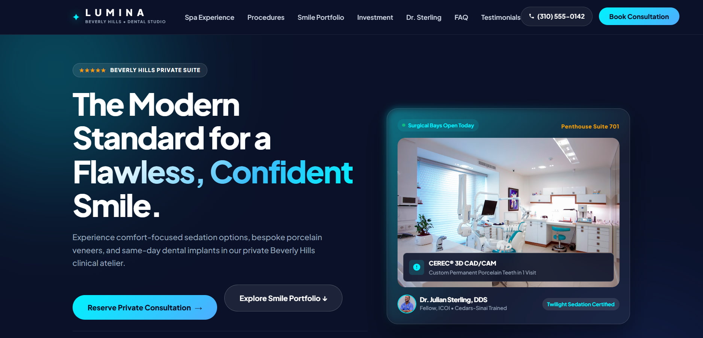

CLINICAL UX / BOOKING ENGINELumina Dental Studio
Modern dental practice platform featuring an interactive before/after transformation slider and frictionless booking flow.
React / Motion / Flow
Live Deployment ↗